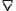

|
NATURE OF AN ELECTROMAGNETIC WAVE*
We now know something quite unusual about an electromagnetic wave and about a photon. Figure 4a shows how a photon may be represented. Here we find that a photon is a single oscillation of the
E-field vector and the H-field vector as shown in the diagram.
Since the oscillation is with respect to time, the wave moves along the axis of velocity in the
S-frame for. a single wavelength, then repeats itself again and again. The E- or H-oscillation actually represents an orthogonal,
rotating etheric or hyperspatial flux about the velocity vector; this spinning
(exploding and imploding) flux is coming into the S-frame from outside it (from virtual states) and returning (into virtual states). It is a neutrino flux, as we shall see. In the photon, half a sine-wave cycle represents the fission action that splits the action quantum into canonical pairs, while the second half of the sine-wave cycle represents the fusion of the canonical fragments back into an action quantum. One half-cycle thus represents a positive time operation or creation, while the other half-cycle represents a negative time (fusion) operation. If the complete sine-wave cycle has sufficient amplitude (energy), it can sometimes be broken in half, with the positive time portion revealing the negative field (negative charge) of the E-vector, while the negative time portion reveals a positive field or charge of the E-vector. This is pair production, the creation of an electron and a positron. Each of these fragments has spin one half, while the photon quantum has spin one. Since the positron is a fusion interaction existent, it is an "electron traveling backward in time," just as predicted by Dirac.
In Figure 4b I show that both the E-field vector and the H-field vector are composed of an infinite number of virtual vectors, each of which is composed of an infinite number of even smaller virtual vectors, and so on. This follows from the fact that during any time
interval - including the period of a single oscillation of a photon - a photon may be considered to consist of an infinite number of virtual happenings, each consisting of an infinite number of
subhappenings, and so on. The photon itself may then be considered to have a direct, nested virtual substructure, and this substructure is directly hyperspatial in nature as well. This structure has not been considered in Maxwell's field equations, which have been
formed from gross macroscopic considerations of bare particles and continuous
fields. Maxwell's equations (and the normal concept of an electromagnetic
wave and single frequency) thus represent only gross envelopes of the actual
form and structure of waves and fields. As I have already shown in the
main body of this book, one can even photograph the hyperfield structure of a
magnetic field using a simple bar magnet and a color TV tube. Further, we
will find that this virtual structure of a photon can be altered,
"modulated," or changed by simple signal modulations, among other
methods. The only requirement is that we learn to regard modulations
differently.
In addition, inside each half-cycle of a photon's E-vector,
relatively instantaneous fluctuations and "losses" of the vector's
magnitude occur. At these "E-field glitches" in the photon, it
actually contains only an H-vector. In this case the photon is a neutrino
momentarily - or, in other words, it will admit a neutrino through the E-field
glitch. The greater the charged field (voltage potential), the greater the
number of photons available, thus the greater the number of neutrino
interactions within the field. A potential of about 200-300 volts per
meter altitude above the earth's surface normally exists in our biosphere.
Many neutrinos emitted by the sun and bombarding the earth are absorbed in or
interact with this E-potential above the earth; hence underground experiments to
measure the neutrino radiation from the sun have detected less neutrinos than
expected.
Momentary H-field glitches exist in a similar manner and
interact with or admit neutrinos in a similar fashion.
Light can thus conduct neutrinic waves containing bioenergy or
eloptic energy, as T.G. Hieronymus discovered. In the first hyperframe (EM
field frame), this can be seen to be simply a space charge of electrons
conducting a wave disturbance through it, or a piece of ordinary conductive
matter conducting an ordinary EM wave.
* Actually the electromagnetic field is not the most fundamental
field, but is something that is torn out of, or separated from, a more fundamental field: the vector potential, or
A-field, well-known in particle physics but usually ignored in EM field theory. E.g., magnetic field is created (and defined) by
 x A =
B. Looking at the cross product, by definition B field is the line integral
about a small surface of the A-field flux through that surface. That is precisely what a single coil of wire, with an electrical current flowing through it, does and therefore creates a magnetic field inside. See the second volume of Feynman's three volumes
of physics for more on the A-field. The direct use of the A-field is also psychotronic engineering.
Next Chapter
|